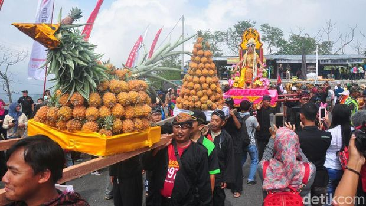

Sate Bekicot
Di Kediri, bekicot biasanya diolah menjadi makanan siap saji seperti keripik bekicot, krengsengan (tongseng) bekicot, dan sate bekicot seperti yang tertera pada gambar. Selain enak, kenyal, dan gurih, bekicot juga memiliki banyak manfaat untuk tubuh loh!. akanan khas Kediri yang satu ini adalah berada di Desa Djengkol, Kecamatan Plosoklaten, Kabupaten Kediri, tepatnya 10 kilometer dari kawasan Monumen Simpang Lima Gumul.
Tahu Takwa
Tahu takwa merupakan hasil olahan tahu yang mempunyai tekstur yang kenyal dan lembut saat dimakan. Uniknya tahu ini, walaupun besar ketika digoreng tidak mengembang dan bagian dalamnya tetap padat, berbeda dengan tahu lainnya. Selain digoreng, tahu ini juga biasa diolah dengan tauge dan ikan asin. Tahu ini memiliki rasa yang gurih dan sedikit masam.
Stik Tahu
Tahu yang terbuat dari kedelai pilihan tentunya akan menghasilkan rasa yang gurih dan lezat. Makanan ringan Stik Tahu ini menjadi andalan masyarakat Kediri Jawa Timur sebagai makanan ringan khas yang memiliki citarasa gurih, lezat dan sehat.
Gethuk Pisang
Getuk pisang merupakan salah satu aset kuliner Kediri yang dari dahulu sudah ada. Meskipun belum diketahui mengenai asal-usul si manis dari Kediri ini, namun tradisi pembuatan dan pengolahan gethuk pisang diyakini sudah berlangsung secara turun-temurun dan diwariskan lintas generasi. Konon, gethuk pisang ini sudah populer sejak zaman Kerajaan Kadiri dan menjadi makanan kesukaan Dewi Sekartaji, putri dari Kerajaan Jenggala (pecahan dari Kerajaan Kadiri).

Simpang Lima Gumul
Bangunan ini dibangun pada tahun 2003 dan diresmikan pada tahun 2008. Nama simpang lima sendiri disebabkan karena bangunan ini terletak di persimpangan 5 jalan yaitu Gampengrejo, Pare, Pagu, Pesantren dan Plosoklaten.

Kediri Waterpark
Kediri Water Park berada di lereng Gunung Wilis, tepatnya di jalan raya Pagung, desa Pagung, kecamatan Semen, Kabupaten Kediri, Jawa Timur. Konon Kediri Water Park ini merupakan wisata air terbesar di Jawa Timur. Resmi dibuka sejak 18 Juni 2014, jadi masih terhitung baru. Tempat ini menjadi istimewa karna punya Water slide Terpanjang se-Asia, Wow emejing, yaitu sepanjang 206 Meter di ketinggian 350 m dpl.
Gunung Kelud
Dengan kondisi Gunung kelud saat ini, maka Gunung kelud memiliki wajah baru. Dengan kubah baru yang berasal dari kawah, Gunung Kelud terlihat lebih indah dari sebelumnya, dan merupakan peristwa fenomenal yang tidak pernah terjadi sebelumnya. Perubahan Gunung kelud dengan Kubah baru sangat menarik bagi pengunjung dan merupakan panorama yang fantastis serta membuat pengunjung penasaran.
Air Terjun Dolo
Perjalan yang mengasyikkan akan anda nikmati disepanjang jalan menuju air Terjun Dolo ini. Wisata ini dapat di tempuh dalam waktu sekitar satu jam dari pusat Kota Kediri. Dan dalam waktu dua jam dari Pare Kediri.
Air terjun ini berada di ketinggian sekitar 1800 Mdpl. Dengan ketinggian air terjun mencapai 125 meter. Semakin membuat wisata ini sangat menarik untuk anda kunjungi.
-->
Jaranan
Jaranan Sentherewe merupakan salah satu jenis jaranan yang mempunyai hubungan historis dengan Reog Ponorogo. Penyebutannya pun berbeda – beda, ada yang menyebutnya jathilan, kuda lumping, jaran kepang, oglek, incling maupun ebek. Disebut sebagai tarian Jaranan Sentherewe karena para penarinya mengendarai kuda – kudaan yang biasanya terbuat dari anyaman bambu yang mirip dengan tarian kuda lumping.
Tari Kethek Ogleng
Tari Kethek Ogleng ini berasal dari legenda Kota Kediri. Yaitu kisah percintaan Panji Asmorobangun dengan Dewi Sekartaji dalam Cerita Panji.

Larung Sesaji
larung sesaji merupakan simbol menyatunya alam semesta dengan manusia. Sebagai sarana memuji syukur pada semua bentuk kekuasaan Tuhan. Inilah yang menjadikan daya tarik wisatawan saat ritual tersebut dikarenakan masyarakat dan wisatawan akan memperebutkan gunungan sesaji yang berisi hasil kekayaan alam atau hasil bumi dari lereng kelud,
Jemblung
Jemblung merupakan salah satu jenis teater tutur yang unik dan spesifik khas Banyumasan yaitu merupakan terater tutur yang tidak menggunakan peralatan musik tradisional dan para pemainnya mengandalkan suaranya sebagai musik pengiring.
-->